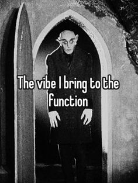

O cinema gótico surgiu no início do século XX, trazendo para as telas a herança da literatura gótica do século XVIII. Essa literatura era conhecida por apresentar castelos sombrios, romantismo trágico, segredos de família e o mistério do sobrenatural.

A história desse tipo de cinema começou a ganhar força nos anos 1920, com o Expressionismo Alemão. Esse movimento teve obras importantes, como Nosferatu (1922) e O Gabinete do Dr. Caligari (1920), que usavam cenários distorcidos e sombras fortes para mostrar a angústia da mente humana.
Nos anos 1930 e 1940, os estúdios Universal ajudaram a espalhar a estética gótica ao adaptar personagens clássicos, como Drácula e Frankenstein. Esses monstros se tornaram ícones da cultura popular.
Entre os anos 1950 e 1970, o estúdio britânico Hammer Films deu uma nova cara ao gênero, com cores fortes, sangue e um toque de erotismo. Essa abordagem influenciou muitos cineastas nos anos seguintes.
A partir dos anos 1990, diretores como Tim Burton e Francis Ford Coppola trouxeram de volta o estilo gótico. Eles misturaram tecnologia avançada, elegância vitoriana e uma estética sombria.
Hoje, o gênero continua vivo. Ele se move livremente entre terror, fantasia, animação e até comédia. O cinema gótico ainda tem força e resiste ao tempo.
Há algo hipnotizante nas sombras que habitam o mundo gótico. O cinema gótico vai além do simples gênero de terror. Ele celebra o trágico, o sublime e o belo, todos envoltos em mistério. Desde as arquiteturas imponentes até as mansões assombradas, passando pelo romantismo sombrio que desafia o tempo, essas produções encantam gerações ao cruzar a linha entre medo e desejo.
A sedução eterna dos vampiros, contos de fadas macabros e a irreverência que desafia o místico estão presentes. Preparei uma seleção definitiva, que vai de épicos românticos a clássicos da animação e da comédia cult. Junte‑se a nós para explorar a atmosfera inconfundível de obras como Drácula de Bram Stoker; Nosferatu; Sleepy Hollow (A Lenda do Cavaleiro sem Cabeça); Crimson Peak (A Colina Escarlate); Interview With The Vampire (Entrevista com o Vampiro); Corpse Bride (A Noiva Cadáver); a icônica Elvira: Mistress of the Dark (Elvira: A Rainha das Trevas) e Carmilla.
Após você explorar a história de cada um dos filmes (Alerta de Spoiler), existe um link que leva ao filme no Drive de cada um deles. Então...
Prepare a iluminação com velas, ajuste o som e descubra por que esses sete títulos moldaram o imaginário gótico nas telonas.